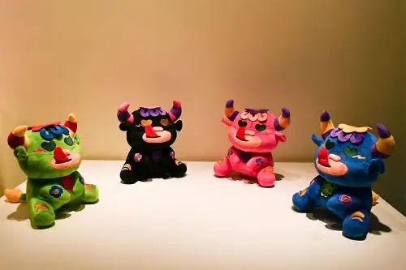

Diseño, cultura popular y arte precolombino en exposición colectiva de art toys
La muestra reúne ediciones limitadas de juguetes de diseñador intervenidos por artistas peruanos
Leer más
La muestra reúne ediciones limitadas de juguetes de diseñador intervenidos por artistas peruanos
Leer más
Debemos revalorizar nuestra cultura. Necesitamos que la educación en las aulas vaya más allá de la fecha y el dato curioso, y que el turismo evolucione hacia un modelo más consciente, respetuoso y sostenible.
Leer más
Con una importantw inversión del Fondo del Embajador, la Fototeca Andina restaurará y digitalizará miles de negativos, destacando el archivo de César Meza Salazar, en un proyecto que celebra también siete décadas de la beca Fulbrigth en el Perú.
Leer más